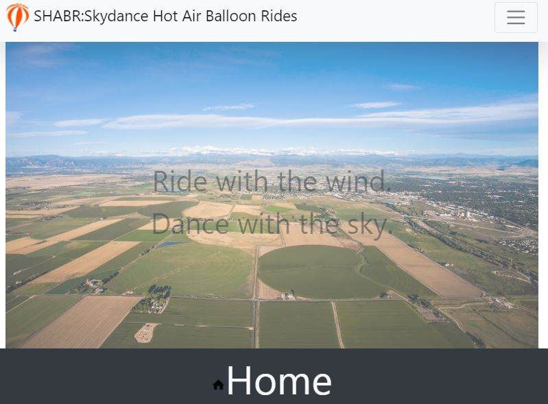

The purpose of making the project was to test out how much I've learned by myself. This process took a lot of debugging and tinkering. When I started learning Bootstrap for the website, I was ultimately overwhelmed by its intricate nature. When I started learning the documentation and the code snippets in my IDE, I began understanding elements of Bootstrap.
A takeaway was to review the foundations before taking on bigger tasks; I went into the code without reviewing in the beginning and became discombobulated due to being insufficient in terms of recitation. However, by reviewing, you reinforce all the knowledge you gain alongside learning something you didn't catch the first time.
Preview Github link